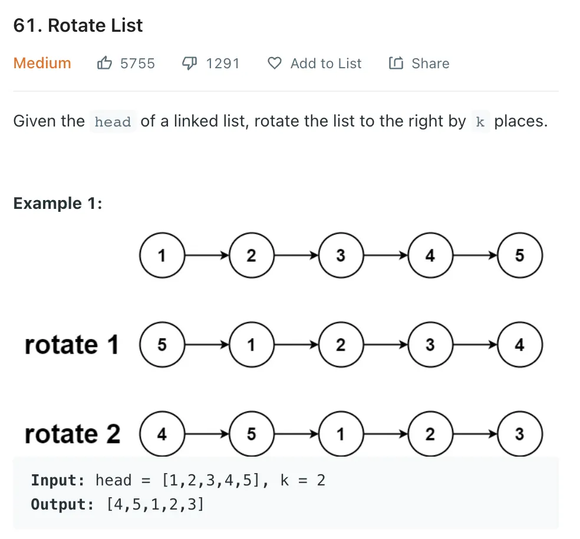
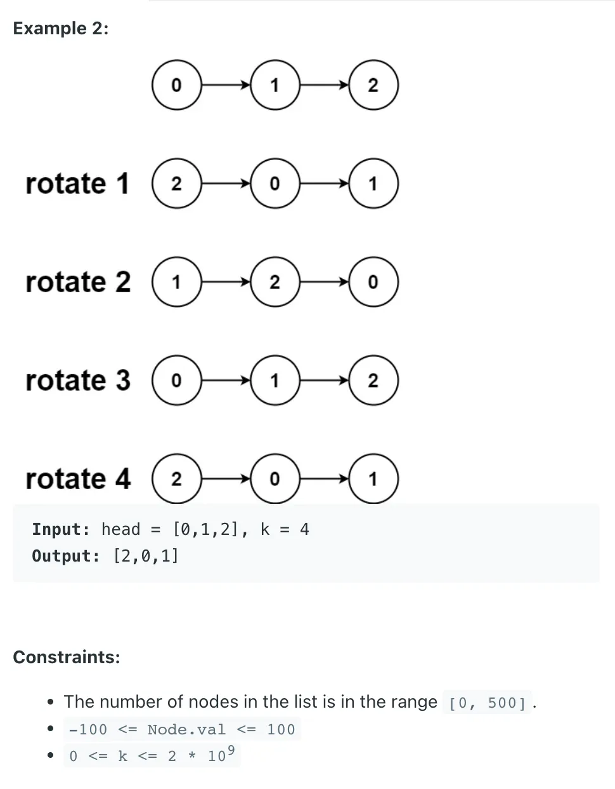

61. Rotate List
考過的公司：Asked by: Bytedance
Question


✍🏽 My Solution
Solution #1 [technique]
Runtime: 1 ms, faster than 81.80% of Java online submissions for Rotate List.
Memory Usage: 42.5 MB, less than 78.35% of Java online submissions for Rotate List.
class Solution {
public ListNode rotateRight(ListNode head, int k) {
if (head == null || k == 0) return head;
int len = 1;
ListNode p = head;
//求出链表长度
while (p.next != null) {
p = p.next;
len++;
}
k %= len;
//尾指针指向头结点
p.next = head;
for (int i = 0; i < len-k; i++) {
p = p.next;
}
//头指针更新为倒数第 n 个节点
head = p.next;
//尾指针置为 null
p.next = null;
return head;
}
}
Explanation (in my words)
- How does their solution work?
- 單純熟練鏈表的操作就會做了
- 先求出鏈表的總長度，因為k有可能大於總長度，所以要將 k 取餘數，就可以得到是倒數第幾個
- 不停的遍歷鏈表，直到起點之前停止
- 頭指針指向 p.next，也就是倒數第n個節點，再來將p.next設定成null，即斷開鏈表
- What is the space/time complexity of their solution?
- time: O(n)
- space: O(1)